16. Kafli – Steinsteypa
Steinsteypa er samsett efni úr sementsefju og fylliefnum. Auk þess eru oft notuð íblendiefni til þess að stjórna eiginleikum steypunnar.
Í kaflanum um sement og bindiefni var fjallað um hvörfun sements, v/s-tölu og uppbyggingu harðnaðrar sementsefju. Þessir þættir hafa mikil áhrif á eiginleika steinsteypu.
Í þessum kafla verður sjónum hins vegar beint að steinsteypunni sjálfri: hvernig hún hegðar sér í fersku ástandi, hvernig eiginleikar hennar þróast við hörðnun og hvaða eiginleikar skipta máli eftir að hún hefur harðnað.
Fyrst verður fjallað um ferska steinsteypu og þær kröfur sem þarf að uppfylla svo hægt sé að flytja hana, leggja hana niður og þjappa henni án þess að hún aðskiljist.
16.1. Fersk steinsteypa
Frá því að steinsteypa er blönduð og þar til hún byrjar að storkna þarf að vera hægt að flytja hana, leggja hana niður í mót og þjappa henni. Eiginleikar steypunnar á þessu tímabili eru kallaðir eiginleikar ferskrar steinsteypu.
Mikilvægur eiginleiki ferskrar steinsteypu er vinnanleiki (e. workability). Vinnanleiki lýsir því hversu auðvelt er að vinna með steypuna þannig að hún fylli mótið og umlyki bendistál án þess að aðskilnaður verði.
Góður vinnanleiki þýðir þó ekki einfaldlega að steypan eigi að vera sem mest fljótandi. Steypan þarf að vera nægilega vinnanleg fyrir þá aðferð sem notuð er við flutning, niðurlögn og þjöppun, en jafnframt þarf hún að haldast einsleit.
Vinnanleiki steypu ræðst meðal annars af:
vatnsmagni og v/s-tölu,
magni og eiginleikum sementsefju,
magni, kornastærðardreifingu, lögun og yfirborðsáferð fylliefna,
íaukum og íblendiefnum,
loftinnihaldi.
Þessir þættir hafa ekki aðeins áhrif á eiginleika ferskrar steypu. Breyting á samsetningu til þess að bæta vinnanleika getur jafnframt haft áhrif á eiginleika steypunnar eftir að hún harðnar.
16.1.1. Þjöppun steinsteypu
Þegar steinsteypa er lögð niður í mót lokast loft inni á milli hlutefna hennar. Þetta loft þarf að fjarlægja eins og kostur er með þjöppun (e. compaction) þannig að steypan fylli mótið og umlyki fylliefni og bendistál.
Ef steypan er ekki nægilega vel þjöppuð verða eftir loftfyllt holrými í henni. Slík holrými draga meðal annars úr styrk og þéttleika steypunnar og geta aukið lekt hennar.
Ófullnægjandi þjöppun → aukin holrýmd → lakari eiginleikar
Vinnanleiki og þjöppun tengjast því náið. Steypa þarf að vera nægilega vinnanleg til þess að hægt sé að þjappa henni með þeirri aðferð sem notuð er við niðurlögn.
Algengasta aðferðin við þjöppun hefðbundinnar steinsteypu er víbrun. Við víbrun minnkar innri mótstaða steypunnar tímabundið, fylliefniskornin geta færst til og loftbólur leita upp úr steypunni. Steypan getur þannig lagst þéttar saman og fyllt mótið betur.
Víbrun má meðal annars framkvæma með stafvíbrator sem stungið er niður í steypuna eða með víbrun móta.
Markmiðið er þó ekki að víbra steypuna sem mest. Ófullnægjandi víbrun getur skilið eftir loftfyllt holrými en óhófleg víbrun getur stuðlað að aðskilnaði í steypunni.

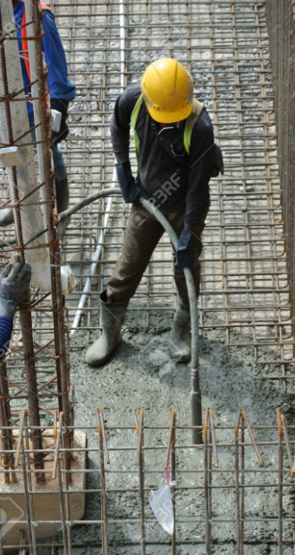
Mynd 16.1 Þjöppun steinsteypu með stafvíbrator.

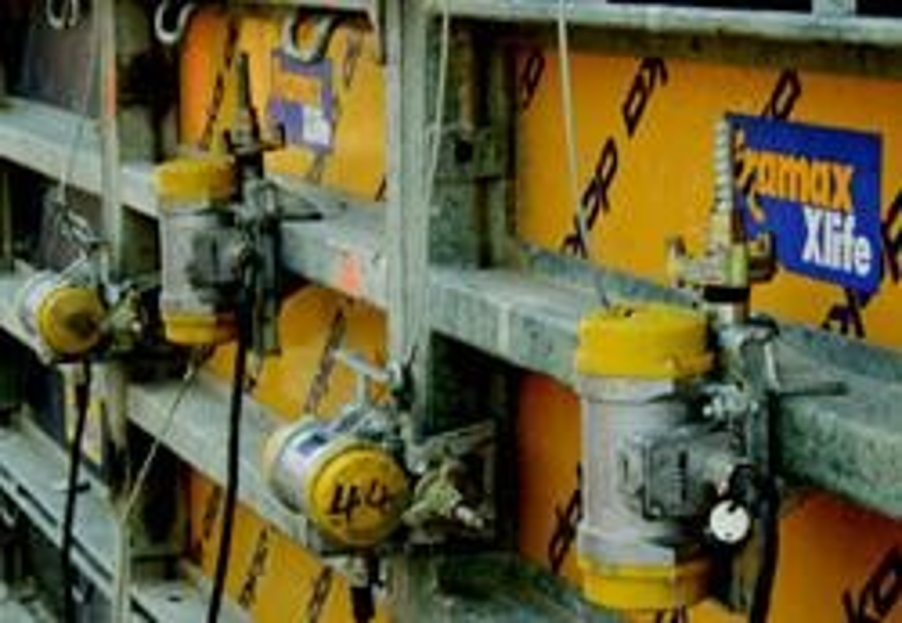
Mynd 16.2 Þjöppun steinsteypu með víbrandi mótum.
Í framkvæmd
Góð niðurlögn og þjöppun hefur bein áhrif á styrk, þéttleika og endingu steinsteypu.
Við niðurlögn þarf meðal annars að forðast of mikla fallhæð, leggja steypuna í hæfilega þykk lög og tryggja að þjöppun nái um allan byggingarhlutann.
Nánari leiðbeiningar um framkvæmd má finna í Rb-blaði HMS um niðurlögn og aðhlúun steinsteypu.
16.1.2. Þjálni og sigmál
Þjálni (e. consistency) lýsir því hversu auðveldlega fersk steinsteypa formbreytist og flæðir. Þjálni er einn þeirra þátta sem hafa áhrif á vinnanleika steypunnar en hugtökin vinnanleiki og þjálni hafa ekki nákvæmlega sömu merkingu.
Til þess að lýsa eiginleikum ferskrar steinsteypu þarf að geta metið hversu auðveldlega hún flæðir og aflagast. Einn algengasti mælikvarðinn er sigmál (e. slump).
Sigmál er mælt með sigmálsprófi. Stöðluð keila er fyllt af ferskri steypu og síðan lyft lóðrétt upp. Steypan sígur þegar keilan er fjarlægð og sigmálið er mælt sem lóðrétt lækkun steypunnar.

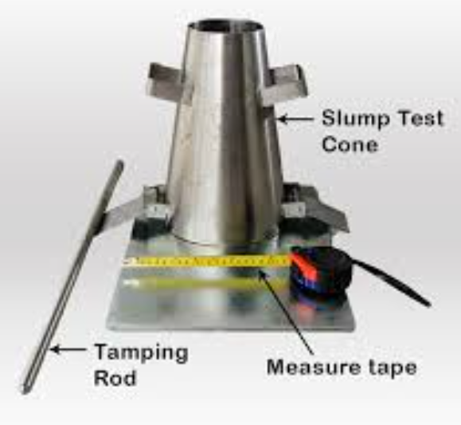
Mynd 16.3 Sigmálskeila.

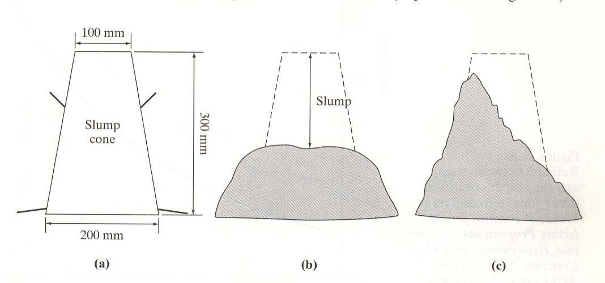
Mynd 16.4 Mæling sigmáls ferskrar steinsteypu.
Hátt sigmál gefur almennt til kynna að steypan sé auðveldari í niðurlögn en lágt sigmál að hún sé stífari. Sigmál eitt og sér gefur þó ekki fullkomna lýsingu á vinnanleika steypu. Tvær steypublöndur geta til dæmis haft svipað sigmál en hegðað sér ólíkt við niðurlögn og þjöppun.
Aukið vatnsmagn eykur almennt sigmál steypu. Það er þó ekki æskileg leið til þess að auka vinnanleika ef viðbótarvatnið hækkar v/s-töluna. Eins og fjallað var um í kaflanum um sement og bindiefni hefur v/s-talan áhrif á uppbyggingu harðnaðrar sementsefju og þar með eiginleika steinsteypunnar.
Þegar þörf er á miklum vinnanleika án þess að auka v/s-töluna er hægt að nota viðeigandi íblendiefni, svo sem flot- eða þjálniefni.
16.1.3. Þjálnitap
Eiginleikar ferskrar steinsteypu breytast með tíma. Eftir blöndun hefst hvörfun sementsins og steypan verður smám saman stífari. Þjálni minnkar því almennt eftir því sem lengri tími líður frá blöndun.
Þessi breyting er kölluð þjálnitap (e. slump loss). Þjálnitap skiptir máli við framkvæmd þar sem nægur vinnanleiki þarf að haldast á meðan steypan er flutt, lögð niður og þjöppuð.

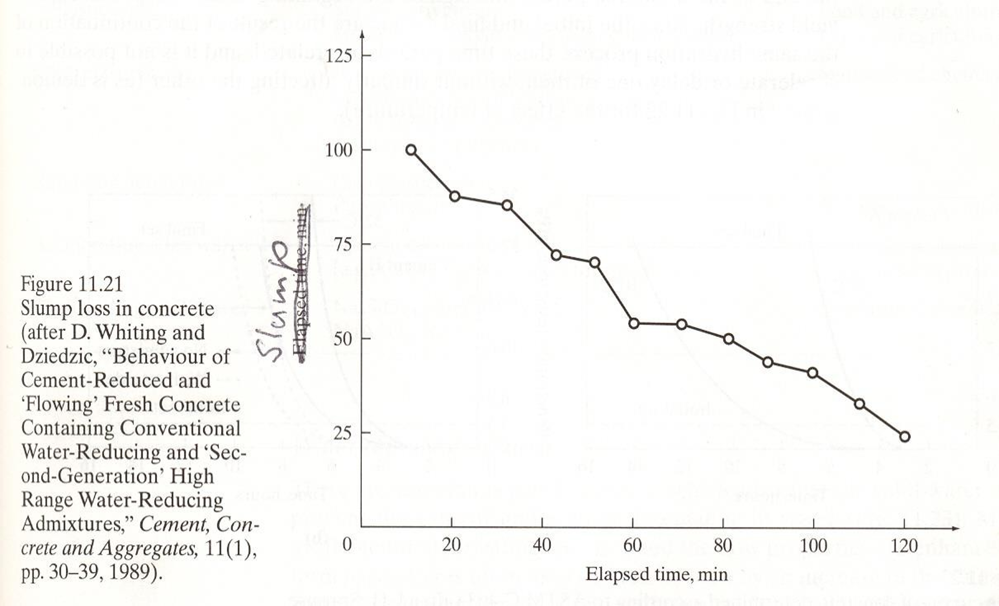
Mynd 16.5 Þjálni steinsteypu minnkar með tíma frá blöndun.
Hraði þjálnitaps getur meðal annars ráðist af samsetningu steypunnar, hitastigi og þeim íblendiefnum sem notuð eru. Því þarf að taka tillit til þess tíma sem líður frá blöndun þar til niðurlögn og þjöppun er lokið.
16.1.4. Aðskilnaður
Steinsteypa er samsett úr efnum sem hafa ólíka kornastærð og eðlisþyngd. Til þess að steypan verði einsleit þurfa þessir efnisþættir að haldast jafnt dreifðir við flutning, niðurlögn og þjöppun.
Aðskilnaður (e. segregation) verður þegar efnisþættir steypunnar skiljast að þannig að samsetning hennar verður ekki lengur einsleit.
Aðskilnaður getur meðal annars orðið þegar gróf fylliefni skiljast frá sementsefjunni og safnast á ákveðin svæði. Hann getur einnig orðið þegar sementsefjan skilur sig frá grófari efnisþáttum steypunnar.

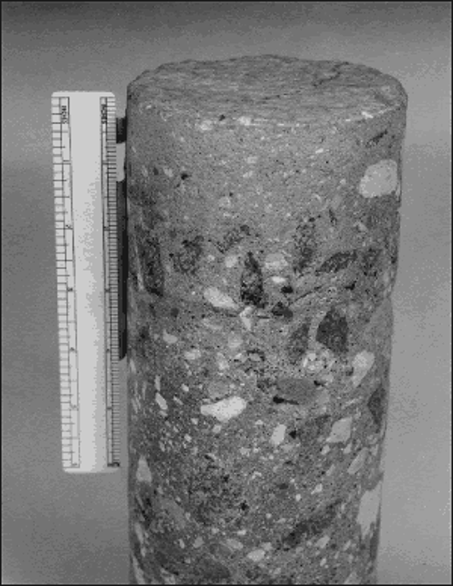
Mynd 16.6 Aðskilnaður í harðnaðri steinsteypu.
Hætta á aðskilnaði eykst ef samloðun steypunnar er lítil. Mjög þunnfljótandi steypa getur til dæmis verið viðkvæm fyrir aðskilnaði. Óhófleg víbrun getur einnig stuðlað að aðskilnaði.
Aðskilnaður er óæskilegur vegna þess að eiginleikar harðnaðrar steypu verða þá ekki einsleitir í byggingarhlutanum.
16.1.5. Vatnsblæðing
Vatnsblæðing (e. bleeding) er sérstök tegund aðskilnaðar þar sem vatn leitar upp á yfirborð ferskrar steinsteypu.
Eftir niðurlögn hafa föstu efnisþættir steypunnar tilhneigingu til að setjast. Ef sementsefjan getur ekki haldið öllu blendivatninu dreifðu getur hluti vatnsins leitað upp í gegnum steypuna og safnast á yfirborðinu.

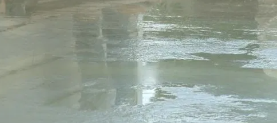
Mynd 16.7 Vatnsblæðing í ferskri steinsteypu.

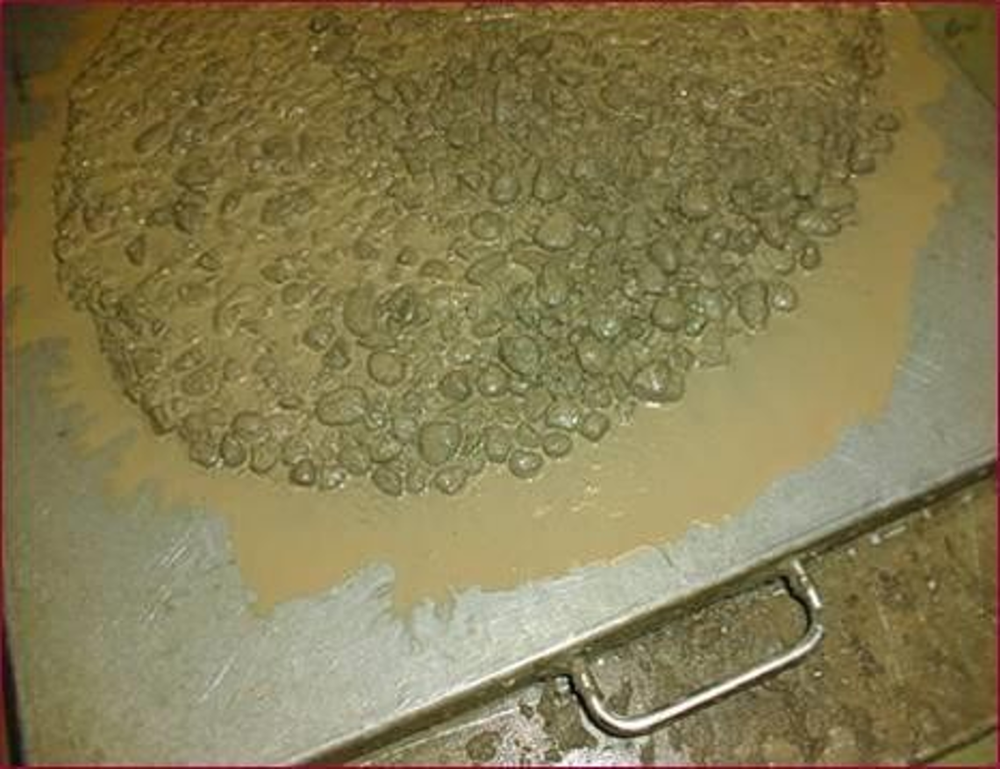
Mynd 16.8 Vatnsblæðing í ferskri steinsteypu.
Vatnsblæðing minnkar eftir því sem storknun steypunnar líður. Mikil vatnsblæðing getur hins vegar haft neikvæð áhrif á uppbyggingu steypunnar. Vatn getur til dæmis safnast undir stærri fylliefniskornum eða bendistáli og myndað veik svæði eftir að steypan harðnar.

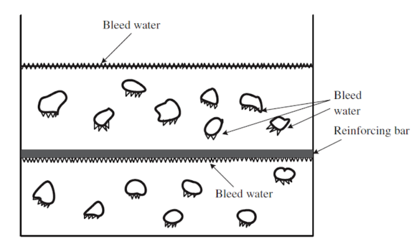
Mynd 16.9 Vatn getur safnast undir fylliefniskornum og myndað veik svæði í steinsteypunni.
Samsetning steypunnar hefur áhrif á vatnsblæðingu. Almennt dregur aukið magn fínefna og góð samloðun sementsefjunnar úr tilhneigingu til vatnsblæðingar. Íblendiefni og íaukar geta einnig haft áhrif á vatnsblæðingu með því að breyta eiginleikum ferskrar steypu.
16.1.6. Íblendiefni
Íblendiefni (e. chemical admixtures) eru efni sem bætt er í steypu í litlu magni til þess að breyta eiginleikum hennar. Þau geta haft áhrif á steypuna meðan hún er fersk, á storknun hennar og á eiginleika hennar eftir hörðnun.
Með íblendiefnum er hægt að stjórna ákveðnum eiginleikum steypunnar án þess að þurfa að breyta grunnefnasamsetningu hennar að sama skapi. Þannig má til dæmis auka vinnanleika án þess að auka v/s-töluna eða breyta því hversu hratt steypan storknar og styrkur hennar þróast.
16.1.6.1. Vatnsspararar og flotefni
Aukið vatnsmagn eykur almennt þjálni steinsteypu. Ef vatni er bætt í steypublöndu án þess að sementsmagnið sé aukið hækkar hins vegar v/s-talan. Það getur haft neikvæð áhrif á eiginleika steypunnar eftir hörðnun.
Vatnsspararar (e. plasticizers eða water reducers) eru íblendiefni sem dreifa sementskornum betur í sementsefjunni. Við það minnkar vatnsþörf steypunnar og hægt er að ná tilteknum vinnanleika með minna vatnsmagni.
Vatnssparara má því meðal annars nota til þess að:
minnka vatnsmagn og lækka v/s-tölu við óbreyttan vinnanleika,
auka vinnanleika við óbreytta v/s-tölu,
auðvelda niðurlögn og þjöppun steypu.

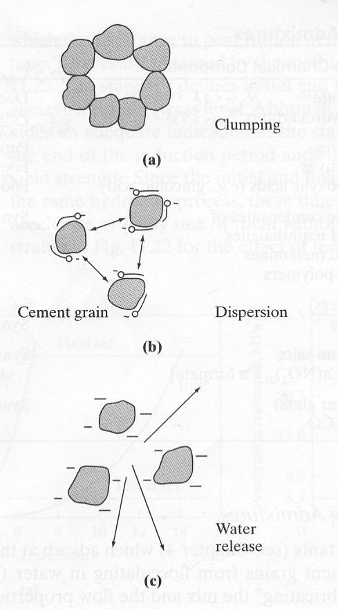
Mynd 16.10 Vatnssparar dreifa sementskornum og draga þannig úr vatnsþörf steypunnar.
Flotefni (e. superplasticizers) eru öflug vatnssparandi íblendiefni. Þau hafa sömu grundvallarvirkni og vatnsspararar en geta gefið mun meiri aukningu í vinnanleika eða meiri lækkun á vatnsmagni.
Með flotefnum er því hægt að framleiða mjög þjála steinsteypu án þess að hækka v/s-töluna. Einnig er hægt að nota þau til þess að ná mjög lágri v/s-tölu án þess að steypan verði of stíf til niðurlagnar og þjöppunar.
Flotefni eru meðal annars mikilvæg við gerð hástyrkleikasteypu og sjálfútleggjandi steypu.

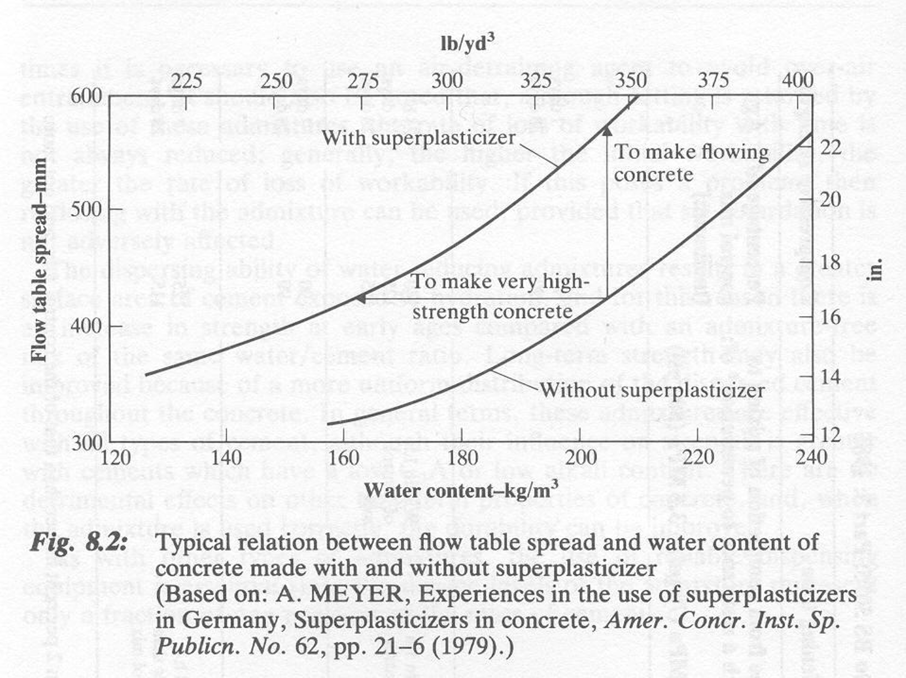
Mynd 16.11 Áhrif flotefnis á þjálni steinsteypu.
16.1.6.2. Loftblendi
Loftblendi (e. air-entraining admixtures) eru yfirborðsvirk efni sem mynda mikinn fjölda smárra loftbóla í sementsefjunni.
Loftblöndun getur bætt vinnanleika ferskrar steinsteypu. Mikilvægasta hlutverk hennar er þó að auka frostþol harðnaðrar steinsteypu. Smáu loftbólurnar veita rými sem dregur úr þrýstingi þegar vatn í holrýmakerfi steypunnar frýs.
Loftinnihald hefur jafnframt áhrif á styrk steinsteypu. Aukið loftinnihald dregur almennt úr styrk og því þarf að stjórna loftinnihaldi með tilliti til þeirra eiginleika sem krafist er.

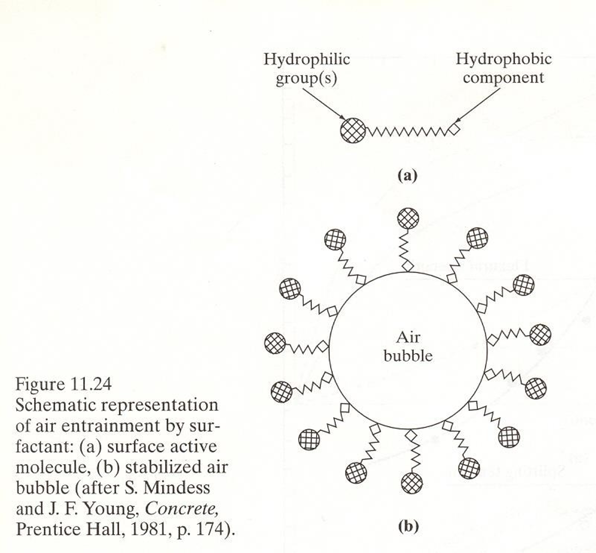
Mynd 16.12 Virkni loftblendis.
16.1.6.3. Storknunarseinkarar og hvörfunarhraðarar
Með íblendiefnum er einnig hægt að hafa áhrif á storknun og styrkþróun steinsteypu.
Storknunarseinkarar (e. retarders) hægja á storknun og lengja þann tíma sem steypan helst vinnanleg. Þeir geta til dæmis verið gagnlegir þegar langur tími líður milli blöndunar og niðurlagnar eða þegar hátt hitastig flýtir fyrir storknun.
Hvörfunarhraðarar (e. accelerators) eru notaðir til þess að flýta storknun eða styrkþróun. Þeir geta meðal annars verið gagnlegir þegar þörf er á hraðri styrkaukningu, til dæmis við ákveðnar viðgerðaraðgerðir.
16.1.6.4. Önnur íblendiefni
Til eru fjölmargir aðrir flokkar íblendiefna sem eru notaðir til sérhæfðari verkefna. Þar má meðal annars nefna rýrnunarvara, seigjubreyta og efni sem draga úr tæringu bendistáls eða öðrum niðurbrotsferlum.
Val á íblendiefnum fer eftir þeim eiginleikum sem óskað er eftir og þeim aðstæðum sem steypan verður fyrir. Íblendiefni geta jafnframt haft áhrif á fleiri eiginleika en þann sem fyrst og fremst er verið að stjórna og því þarf að taka tillit til heildaráhrifa þeirra.
16.2. Hörnuð steinsteypa
Eftir niðurlögn og þjöppun tekur steinsteypan að storkna og harðna. Hvörfun sementsins heldur áfram og eiginleikar steypunnar þróast með tíma.
Eins og fjallað var um í kaflanum um sement og bindiefni hefur uppbygging sementsefjunnar mikil áhrif á eiginleika harðnaðrar steinsteypu. Eiginleikar steinsteypunnar ráðast þó ekki eingöngu af sementsefjunni heldur einnig af fylliefnunum, hlutföllum efnisþáttanna og samspili þeirra.
Meðal mikilvægustu eiginleika harðnaðrar steinsteypu eru styrkur, stífleiki, tímaháðar formbreytingar og ending.
16.2.1. Styrkur steinsteypu
Steinsteypa hefur mikið þrýstiþol en mun minna togþol. Þessi munur er grundvallareiginleiki steinsteypu og ein helsta ástæða þess að bendistál er notað með steinsteypu í burðarvirkjum.
Styrk steinsteypu má meðal annars lýsa með:
þrýstiþoli (e. compressive strength),
togþoli (e. tensile strength),
beygjutogþoli (e. flexural strength).

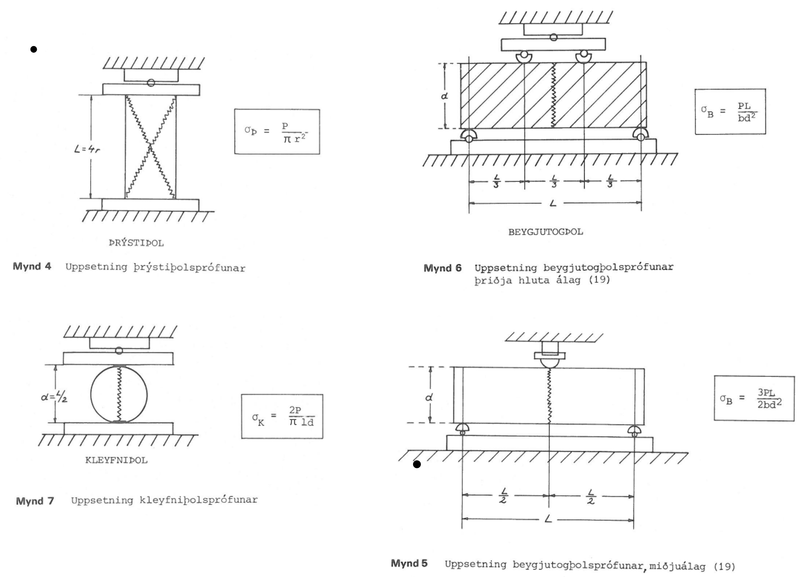
Mynd 16.13 Uppsetning á mælitækjum til þess að ákvarða þrýsti-, tog- og beygjutogþol steinsteypu.
Þrýstiþol er langalgengasti mælikvarðinn á styrk steinsteypu. Það er tiltölulega einfalt að mæla þrýstiþol og það hefur sterk tengsl við marga aðra eiginleika steypunnar. (Sjá töflu með þrýstiþoli, \(f_{ck}\) og togþoli \(f_{ctm}\). Taflan sýnir að meðaltogþolið er u.þ.b. 10% af þrýstiþolinu.)
Þrýstiþol er ákvarðað með því að setja álag á steypusýni í þrýstingi þar til brot verður. Styrkurinn er reiknaður út frá mesta álagi sem sýnið ber og þverskurðarflatarmáli þess:
þar sem \(F\) er mesta álag fyrir brot og \(A\) er þverskurðarflatarmál sýnisins.
\(f_{ck}\) [MPa] |
\(f_{ctm}\) [MPa] |
\(f_{ctm}/f_{ck}\) [%] |
|---|---|---|
12 |
1,6 |
13 |
16 |
1,9 |
12 |
20 |
2,2 |
11 |
25 |
2,6 |
10 |
30 |
2,9 |
10 |
35 |
3,2 |
9 |
40 |
3,5 |
9 |
45 |
3,8 |
8 |
50 |
4,1 |
8 |
Þrýstiþol steinsteypu er háð aldri hennar og því þarf alltaf að miða styrk við ákveðinn aldur. Algengt er að miða flokkun steinsteypu við þrýstiþol við 28 daga aldur.
16.2.1.1. Þættir sem hafa áhrif á styrk
Styrkur steinsteypu ræðst af samsetningu hennar, uppbyggingu og aðstæðum við niðurlögn og hörðnun. Margir þessara þátta tengjast því hversu mikið holrými er í steypunni og hvernig sementsefjan þróast við hvörfun.
16.2.1.1.1. V/s-tala
V/s-talan er einn mikilvægasti þátturinn sem hefur áhrif á styrk steinsteypu. Eins og fjallað var um í kaflanum um sement og bindiefni hefur v/s-talan áhrif á holrýmd harðnaðrar sementsefju.
Hærri v/s-tala leiðir almennt til meiri háræðaholrýmdar og þar með minni styrks. Lægri v/s-tala getur hins vegar leitt til þéttari sementsefju og meiri styrks, að því gefnu að steypan sé nægilega vinnanleg og aðstæður til hvörfunar séu góðar.

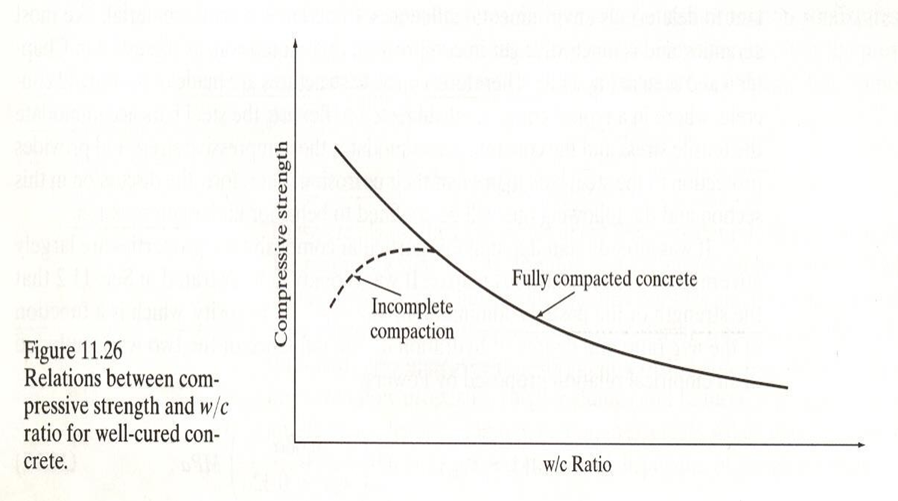
Mynd 16.14 Áhrif v/s-tölu á þrýstiþol steinsteypu.
16.2.1.1.2. Þjöppun
Við niðurlögn getur loft lokast inni í steypunni. Eins og fjallað var um í kaflanum um ferska steinsteypu er markmið þjöppunar að fjarlægja þetta loft og tryggja að steypan fylli mótið.
Ef þjöppun er ófullnægjandi verða eftir loftfyllar holur (hreiður). Holurnar minnka þann hluta þversniðsins sem getur borið álag og draga því úr styrk steypunnar.

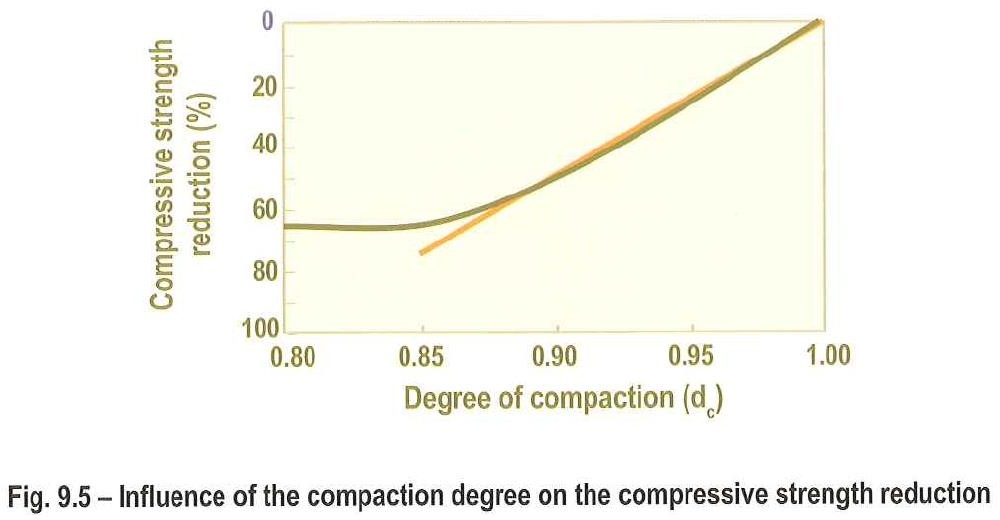
Mynd 16.15 Áhrif þjöppunar á þrýstiþol steinsteypu.
16.2.1.1.3. Loftinnihald
Loftblendi myndar smáar loftbólur (pórur) í sementsefjunni. Loftbólurnar hafa mikilvægu hlutverki að gegna varðandi frostþol steinsteypu en aukið loftinnihald dregur jafnframt úr styrk hennar.

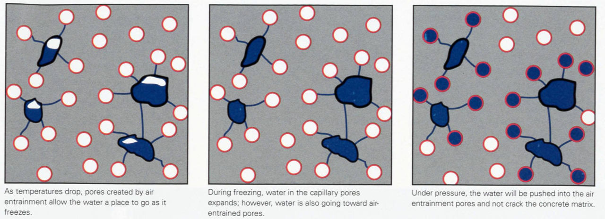
Mynd 16.16 Margar litlar pórur myndaðar með loftblendi auka frostþol steypunnar.
Þetta er dæmi um að breyting á samsetningu steinsteypu getur haft bæði jákvæð og neikvæð áhrif. Við loftblöndun þarf því að tryggja nægilegt loft til þess að ná tilætluðu frostþoli án þess að styrkur minnki meira en ásættanlegt er.

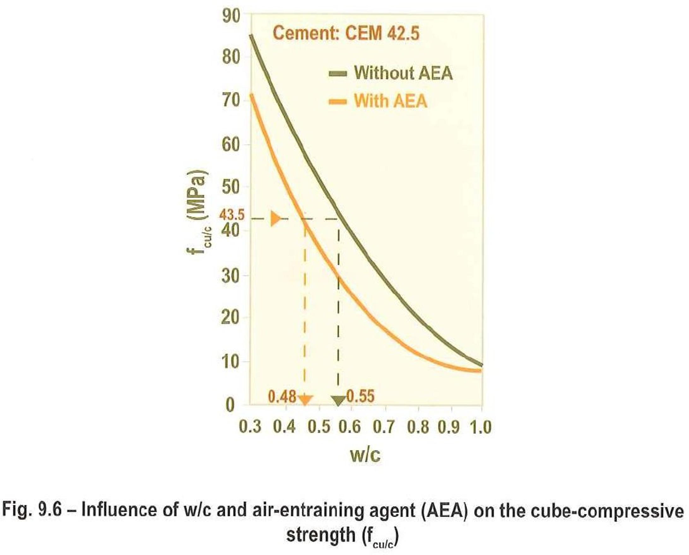
Mynd 16.17 Áhrif loftinnihalds á þrýstiþol steinsteypu.
16.2.1.1.4. Aldur, hitastig og aðhlúun
Styrkur steinsteypu þróast með tíma eftir því sem hvörfun sementsins gengur lengra. Steinsteypa heldur því áfram að auka styrk sinn eftir að hún hefur harðnað.
Hitastig hefur áhrif á hraða hvörfunar og þar með á styrkþróun. Hærra hitastig getur hraðað styrkþróun á fyrstu stigum en samband hitastigs og langtímastyrks er flóknara.
Til þess að hvörfun geti haldið áfram þarf jafnframt nægilegt vatn. Aðhlúun (e. curing) felst í því að skapa aðstæður sem stuðla að áframhaldandi hvörfun og koma meðal annars í veg fyrir að steypan þorni of hratt.
Góð aðhlúun er sérstaklega mikilvæg nálægt yfirborði steypunnar, þar sem vatnstap til umhverfisins getur annars stöðvað eða hægt á hvörfun.

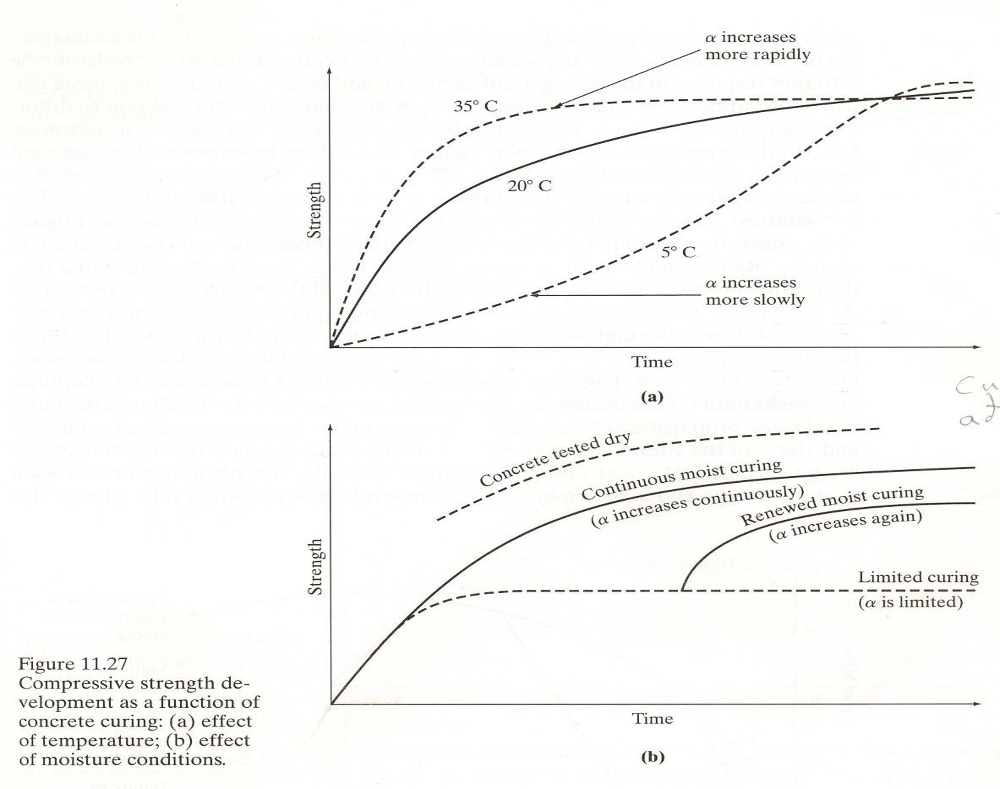
Mynd 16.18 Áhrif hitastigs og aðhlúunar á styrkþróun steinsteypu.
16.2.1.2. Spennu–streitu hegðun steinsteypu
Gott að muna
Spenna lýsir álagi á flatarmál, streita hlutfallslegri formbreytingu og fjaðurstuðull lýsir stífleika efnis.
Fyrir línulega fjaðrandi efni gildir:
Fjallað var nánar um spennu, streitu og fjaðurstuðul í kafla um styrk og stífleika.
Steinsteypa er ekki fullkomlega línulega fjaðrandi efni. Spennu–streitu ferill hennar verður ólínulegur eftir því sem álagið eykst.

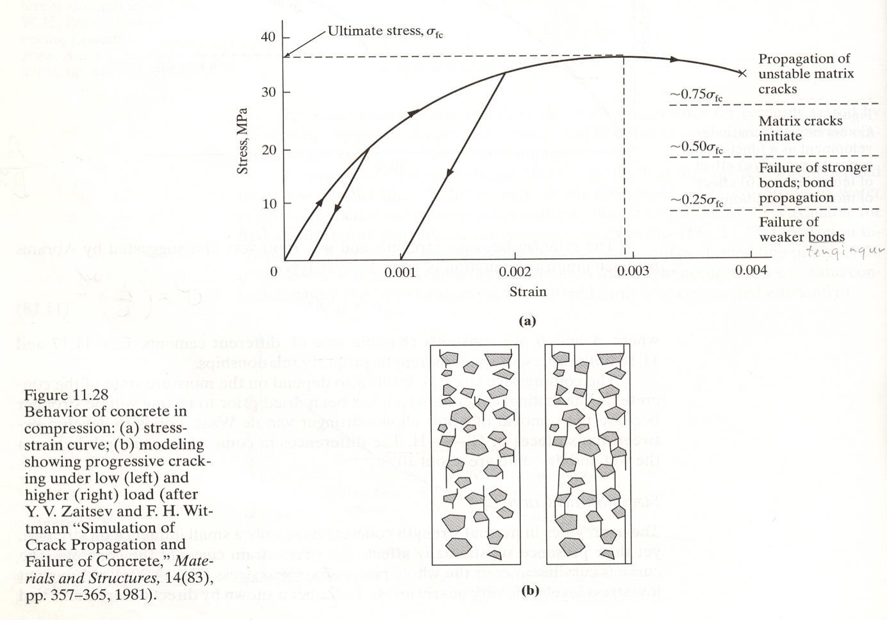
Mynd 16.19 Spennu–streitu ferill steinsteypu.
Ólínuleg hegðun steinsteypu tengist meðal annars sprungumyndun í efninu. Smásprungur eru til staðar í steinsteypu áður en hámarksstyrk er náð og þeim fjölgar og þær stækka eftir því sem álagið eykst.
Við þrýstiálag eykst streitan fyrst tiltölulega jafnt með spennunni. Með auknu álagi verður sprungumyndun meiri og ferillinn verður ólínulegri. Að lokum næst hámarksspenna og brot þróast í steypunni.
Lögun spennu–streitu ferilsins er því bæði lýsing á stífleika steypunnar og því hvernig skemmdir þróast í henni fram að broti.
16.2.1.2.1. Álagshraði
Mældur styrkur steinsteypu er einnig háður álagshraða. Við hraða álagsaukningu mælist almennt meiri styrkur en þegar sama álagi er beitt hægar.
Þegar styrkgildi eru borin saman þarf því að hafa í huga að prófunaraðferð og álagshraði geta haft áhrif á niðurstöðuna.

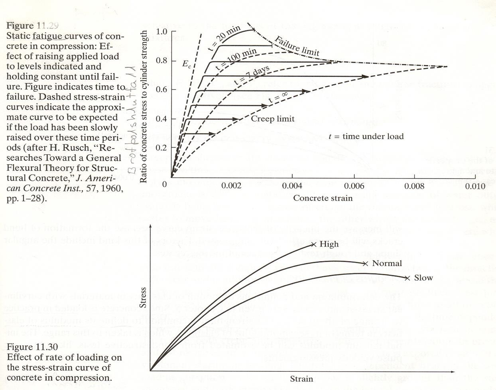
Mynd 16.20 Áhrif álagshraða á mældan styrk steinsteypu.
16.2.2. Stífleiki steinsteypu
Þar sem spennu–streitu ferill steinsteypu er ekki línulegur er fjaðurstuðull hennar ekki eitt fast gildi sem fæst sem halli alls ferilsins. Hægt er að skilgreina fjaðurstuðul út frá mismunandi hlutum spennu–streitu ferilsins.

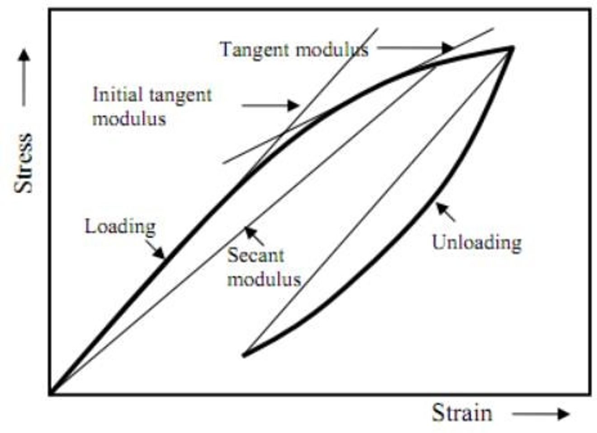

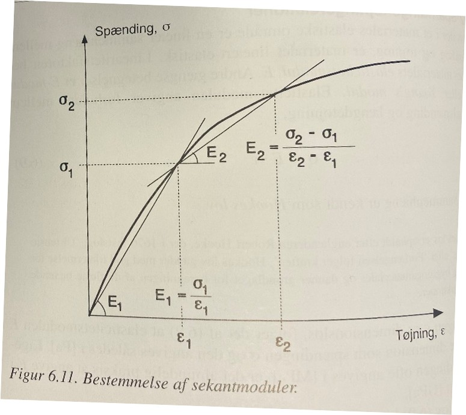
Mynd 16.21 Mismunandi leiðir til þess að ákvarða fjaðurstuðul steinsteypu út frá spennu–streitu ferli hennar.
Í verkfræðilegum útreikningum er meðal annars notaður sniðilsstuðull (e. secant modulus), þar sem stífleikinn er ákvarðaður út frá halla línu milli tveggja punkta á spennu–streitu ferlinum.
16.2.2.1. Samsett uppbygging og stífleiki
Steinsteypa er samsett efni. Við fyrstu sýn mætti því ætla að spennu–streitu hegðun hennar væri einfaldlega sambland af hegðun fylliefna og sementsefju. Raunin er þó flóknari.
Fylliefni hafa almennt háan fjaðurstuðul og sýna nær línulega spennu–streitu hegðun við það álag sem hér er til skoðunar. Sementsefjan hefur mun lægri fjaðurstuðul en getur einnig sýnt nokkurn veginn línulega hegðun.
Steinsteypan sjálf hefur fjaðurstuðul sem liggur á milli fjaðurstuðuls fylliefnanna og sementsefjunnar. Spennu–streitu ferill hennar er hins vegar greinilega ólínulegur.

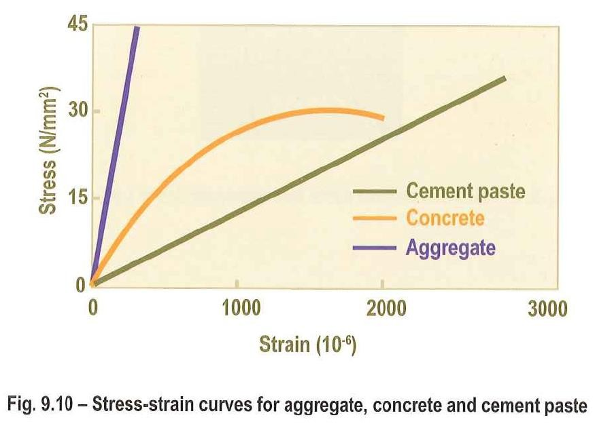
Mynd 16.22 Spennu–streitu hegðun fylliefna, sementsefju og steinsteypu.
Til þess að skýra þessa hegðun þarf að líta á steinsteypu sem efni sem samanstendur af þremur fösum:
fylliefnum,
sementsefju,
fasaskil milli fylliefna og sementsefju.
Svæðið við fasaskil fylliefna og sementsefju er oft kallað þriðji fasinn (e. interfacial transition zone, ITZ). Uppbygging sementsefjunnar á þessu svæði er frábrugðin uppbyggingu hennar fjær fylliefnunum og svæðið er almennt veikari hluti steypunnar.
Vegna mismunandi stífleika fylliefna og sementsefju myndast spennuþéttingar við fasaskilin þegar steinsteypa verður fyrir álagi. Smásprungur geta því myndast og þróast á fasaskilunum áður en hámarksstyrk steypunnar er náð.
Eftir því sem álagið eykst fjölgar smásprungum og þær breiðast út. Þessi stigvaxandi sprungumyndun er ein helsta ástæða þess að spennu–streitu ferill steinsteypu verður ólínulegur þótt hegðun einstakra efnisþátta hennar sé mun nær línulegri.
Íslenskt samhengi
Fjaðurstuðull steinsteypu ræðst meðal annars af stífleika fylliefnanna. Þetta skiptir sérstaklega máli á Íslandi þar sem algengt er að nota pórótt basaltfylliefni.
Rannsóknir á íslenskri steinsteypu hafa sýnt að fjaðurstuðull hennar getur verið lægri en spáð er út frá þrýstistyrk einum. Því þarf að taka eiginleika fylliefnanna sérstaklega með í reikninginn þegar stífleiki steinsteypu er metinn.
16.2.3. Skrið
Þegar steinsteypa verður fyrir álagi verður strax formbreyting sem ræðst meðal annars af stífleika hennar. Ef álaginu er haldið föstu heldur formbreytingin hins vegar áfram að aukast með tíma.
Þessi tímaháða formbreyting undir viðvarandi álagi kallast skrið (e. creep).

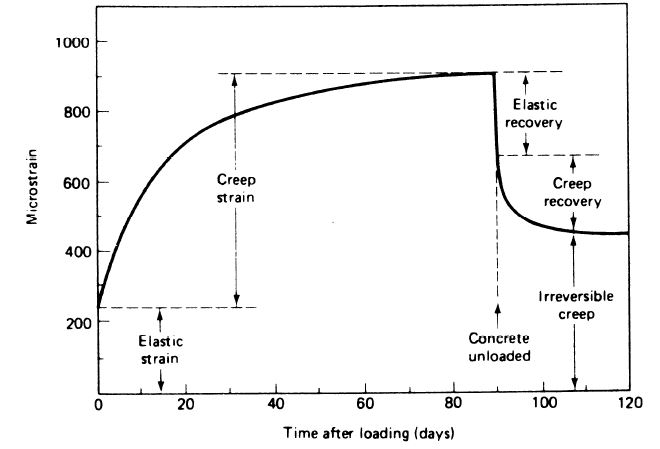
Mynd 16.23 Formbreyting steinsteypu eykst með tíma þegar hún verður fyrir viðvarandi álagi.
Þegar álag er sett á steinsteypu kemur því fyrst fram skyndileg upphafsformbreyting og síðan viðbótarformbreyting vegna skriðs.
Ef álagið er fjarlægt gengur hluti formbreytingarinnar til baka. Formbreytingin gengur þó ekki endilega öll til baka og hluti hennar getur orðið varanlegur.
16.2.3.1. Hvað ræður skriði?
Skrið á sér fyrst og fremst stað í sementsefjunni. Fylliefnin skríða mun minna og hamla því formbreytingum sementsefjunnar.
Steinsteypa með miklu hlutfalli stífra fylliefna hefur því almennt minna skrið en steinsteypa með miklu hlutfalli sementsefju. Stífleiki fylliefnanna skiptir einnig máli; því stífari sem fylliefnin eru, því meira halda þau aftur af skriði sementsefjunnar.
Þetta sýnir aftur mikilvægi þess að líta á steinsteypu sem samsett efni. Sementsefjan hefur tilhneigingu til að formbreytast með tíma en fylliefnin takmarka þessar formbreytingar.

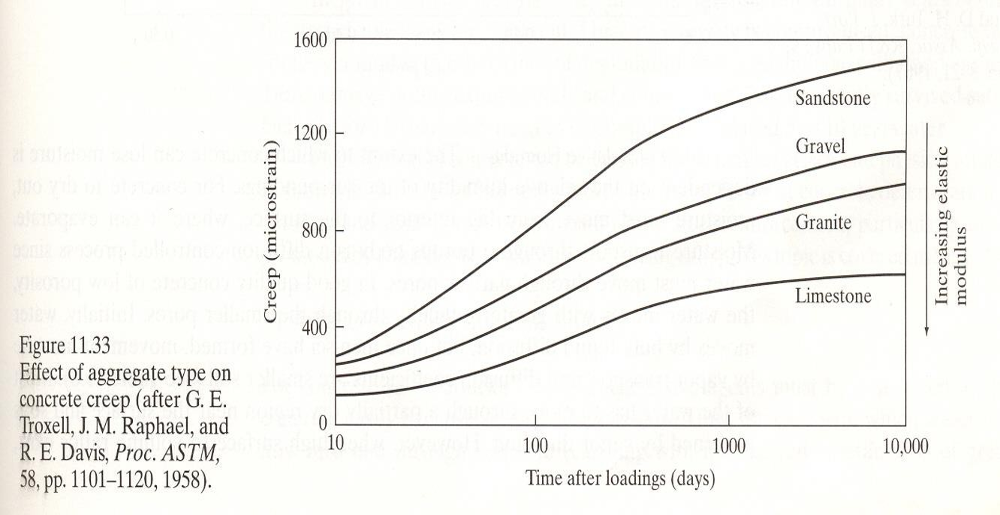
Mynd 16.24 Skriðþróun fyrir steypu með mismunandi fylliefnum. Því hærri sem fjaðurstuðullinn er þeim mun minna verður skriðið.

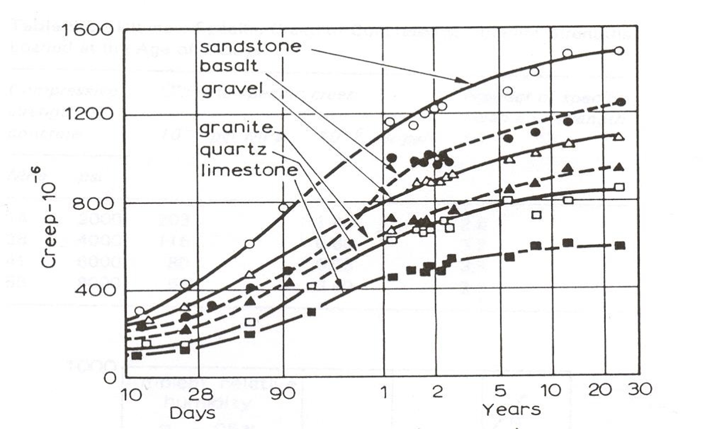
Mynd 16.25 Skriðþróun fyrir steypu með mismunandi fylliefnum. Basalt er algengasta íslenska fylliefnið.
Íslenskt samhengi
Eiginleikar fylliefna geta haft veruleg áhrif á skrið steinsteypu. Rannsóknir á íslenskri steinsteypu hafa meðal annars sýnt meira skrið þegar notuð eru pórótt basaltfylliefni en þegar notuð eru stífari og þéttari fylliefni.
Því er ekki alltaf nægilegt að áætla skrið út frá styrkleika steinsteypunnar einum.
16.2.3.2. Aldur og hvörfun
Skrið steinsteypu er háð því hversu langt hörðnun hennar er komin. Eftir því sem hvörfun sementsins gengur lengra verður sementsefjan stífari og tilhneiging hennar til skriðs minnkar.
Aldur steypunnar þegar álag er sett á skiptir því miklu máli. Ung steinsteypa skríður meira undir viðvarandi álagi en eldri steinsteypa sem hefur náð meiri hörðnun.

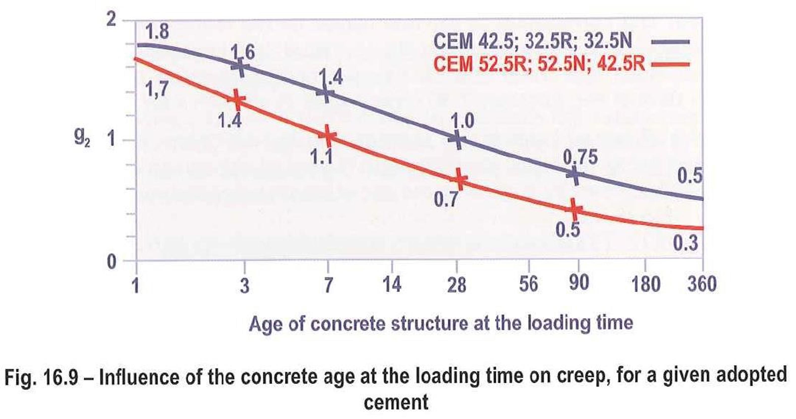
Mynd 16.26 Áhrif aldurs steinsteypu við upphaf álags á skrið.
16.2.3.3. Raki
Rakastig umhverfisins hefur mikil áhrif á skrið. Skrið verður almennt meira þegar steinsteypa er í þurru umhverfi en þegar hlutfallsraki umhverfisins er hár.
Þurrkun og skrið eiga sér þá stað samtímis og samspil þeirra eykur tímaháðar formbreytingar steypunnar.

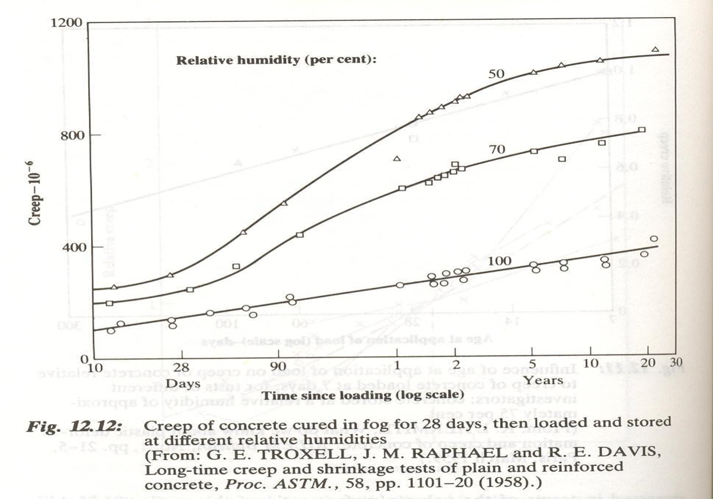
Mynd 16.27 Áhrif hlutfallsraka umhverfis á skrið steinsteypu.
Gott að muna
Skrið þróast yfir langan tíma en stór hluti þess kemur fram tiltölulega snemma. Ef miðað er við skrið eftir 20 ár má gróflega gera ráð fyrir að:
um 25% komi fram á fyrstu tveimur vikunum,
um 50% komi fram á fyrstu þremur mánuðunum,
um 75% komi fram á fyrsta árinu.
16.2.4. Rýrnun
Rýrnun (e. shrinkage) er rúmmálsminnkun sem verður í steinsteypu án utanaðkomandi álags.
Rýrnun sementsefju getur stafað af því að vatn tapast úr steypunni til umhverfisins eða vegna breytinga sem verða inni í sementsefjunni við áframhaldandi hvörfun.
Fylliefnin rýrna hins vegar mun minna og hamla því rýrnun sementsefjunnar. Eins og við skrið hefur því bæði magn og stífleiki fylliefna áhrif á heildarformbreytingu steinsteypunnar.
Rýrnun verður sérstaklega mikilvæg þegar steypan getur ekki dregist saman. Þá myndast togspennur í henni. Þar sem togþol steinsteypu er lágt geta þessar spennur leitt til sprungumyndunar.
Hindruð rýrnun → togspennur → hætta á sprungumyndun
Rýrnun steinsteypu má meðal annars greina í:
plastíska rýrnun,
þurrkrýrnun,
sjálfútþornunarrýrnun.
Þessar gerðir rýrnunar eiga sér stað við mismunandi aðstæður og orsakir þeirra eru ekki þær sömu.
16.2.4.1. Plastísk rýrnun
Plastísk rýrnun (e. plastic shrinkage) verður mjög snemma, á meðan steypan er enn plastísk og hefur ekki öðlast umtalsverðan styrk.
Eftir niðurlögn getur vatn gufað upp af yfirborði steypunnar. Ef uppgufunin verður hraðari en vatn getur borist að yfirborðinu úr steypunni lækkar vatnsborðið í yfirborðslaginu og sementsefjan dregst saman.
Á þessu stigi hefur steypan mjög lítið togþol. Ef samdrátturinn er hindraður geta því myndast sprungur í yfirborði hennar.
Hætta á plastískri rýrnun eykst þegar aðstæður stuðla að hraðri uppgufun, meðal annars við:
mikinn vind,
lágan hlutfallsraka,
hátt hitastig steypu,
hátt hitastig umhverfis.
Mikilvægt er því að verja yfirborð nýlagðrar steypu gegn of hraðri uppgufun. Það má meðal annars gera með yfirbreiðslu og viðeigandi aðhlúun.
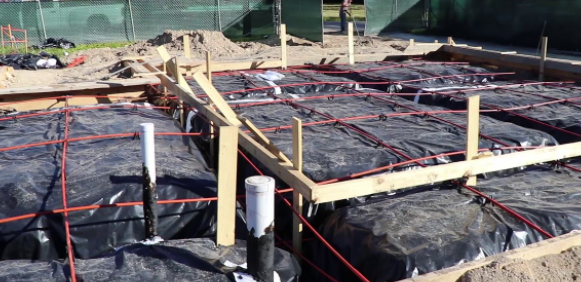 |
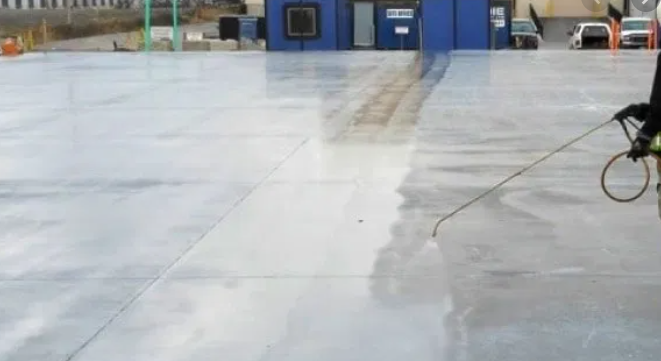 |


Dæmi um aðhlúun steinsteypu með yfirbreiðslu og vökvun.
16.2.4.2. Þurrkrýrnun
Þurrkrýrnun (e. drying shrinkage) verður eftir að steypan hefur storknað og hörðnun er hafin.
Ef hlutfallsraki umhverfisins er lægri en rakinn í steypunni leitar vatn úr pórukerfi hennar til umhverfisins. Við þurrkun myndast kraftar í háræðakerfi sementsefjunnar sem valda því að hún dregst saman.
Þurrkun hefst við yfirborð steypunnar og færist smám saman inn í byggingarhlutann. Stærð og lögun byggingarhlutans hafa því áhrif á hraða þurrkunar og rýrnunar. Þunnir byggingarhlutar eða hlutir með stórt yfirborð miðað við rúmmál þorna almennt hraðar.
Umhverfisaðstæður skipta einnig miklu máli. Þurrkrýrnun verður almennt meiri við lágan hlutfallsraka en minni þegar steypan er í röku umhverfi.
16.2.4.3. Sjálfútþornunarrýrnun
Sjálfútþornunarrýrnun (e. autogenous shrinkage) verður án þess að vatn þurfi að tapast úr steypunni til umhverfisins.
Við hvörfun sementsins er vatn bundið í hvörfunarefni. Þegar hvörfunin gengur áfram minnkar því magn lauss vatns í pórukerfi sementsefjunnar. Þetta getur lækkað innri hlutfallsraka og valdið samdrætti sementsefjunnar.
Sjálfútþornunarrýrnun er yfirleitt lítil í hefðbundinni steinsteypu með tiltölulega háa v/s-tölu en verður mikilvægari þegar v/s-talan er mjög lág, svo sem í hástyrkleikasteypu.
Ólíkt þurrkrýrnun stafar sjálfútþornunarrýrnun ekki fyrst og fremst af uppgufun vatns af yfirborði. Hefðbundnar aðgerðir sem koma í veg fyrir þurrkun geta því ekki komið í veg fyrir hana á sama hátt.
Gott að muna
Rýrnun steinsteypu ræðst af samspili sementsefju, fylliefna, rakaflutnings og umhverfisaðstæðna.
Sementsefjan rýrnar mest. Aukið hlutfall sementsefju leiðir því almennt til meiri rýrnunar.
Fylliefnin hamla rýrnun. Mikið magn fylliefna og stíf fylliefni draga almennt úr rýrnun steinsteypu.
Rakaástand og umhverfi ráða miklu um þurrkrýrnun. Lágur hlutfallsraki og aðstæður sem auka uppgufun stuðla að meiri þurrkun og rýrnun.
Stærð og lögun byggingarhlutans skipta máli. Byggingarhlutar með stórt yfirborð miðað við rúmmál þorna almennt hraðar.
V/s-talan hefur ekki sömu áhrif á allar gerðir rýrnunar. Við mjög lága v/s-tölu verður sjálfútþornunarrýrnun mikilvægari, jafnvel þótt þurrkrýrnun sé ekki endilega mikil.
16.3. Ending steinsteypu
Í kaflanum um niðurbrot efna og endingu var fjallað um mismunandi niðurbrotsferli og þær aðstæður sem þurfa að vera fyrir hendi til þess að þeir geti átt sér stað.
Fyrir steinsteypu gegna raki og flutningur efna sérstaklega mikilvægu hlutverki. Vatn og uppleyst efni þurfa að geta komist inn í steypuna til þess að mörg niðurbrotsferli geti átt sér stað.
16.3.1. Holrýmd, lekt og ending
Hörnuð sementsefja inniheldur holrými af mismunandi stærðum. Fyrir endingu skiptir ekki aðeins máli hversu mikið holrými er í steypunni, heldur einnig hvort pórurnar tengjast saman þannig að vatn og uppleyst efni geti flust um þær.
V/s-talan hefur þar mikil áhrif. Hærri v/s-tala leiðir almennt til opnara háræðakerfis og auðveldar þannig flutning vatns og efna um sementsefjuna.
Hærri v/s-tala → opnara pórukerfi → meiri lekt → aukin hætta á niðurbroti
Góð þjöppun og aðhlúun skipta einnig máli. Ófullnægjandi þjöppun skilur eftir holrými í steypunni og ófullnægjandi aðhlúun getur leitt til þess að yfirborðslag hennar verði opnara og viðkvæmara fyrir áhrifum umhverfisins.
Sprungur geta jafnframt myndað greiðar leiðir fyrir vatn og önnur efni inn í steypuna. Sprungumyndun vegna rýrnunar getur því haft bein áhrif á endingu hennar.
Þétt og vel þjöppuð steinsteypa með lága lekt er almennt betur í stakk búin til þess að standast umhverfisáraun en steinsteypa með opið holukerfi eða sprungur.
Tenging við kafla 8
Í kafla 8 var meðal annars fjallað um frostskemmdir, kolsýringu, alkalí-kísil efnahvörf og tæringu málma.
Samsetning og uppbygging steinsteypunnar ræður því hversu auðveldlega vatn og önnur efni komast inn í hana og þar með hversu viðkvæm hún er fyrir mörgum þessara niðurbrotsferla.
16.4. Kröfur til steinsteypu
Þegar steinsteypa er valin fyrir byggingarhluta þarf að skilgreina þá eiginleika sem hún á að hafa. Kröfurnar ráðast meðal annars af hlutverki byggingarhlutans, aðstæðum við framkvæmd og þeirri umhverfisáraun sem mannvirkið verður fyrir.
Kröfur til steinsteypu geta komið fram í stöðlum, reglugerðum og verklýsingum. Til dæmis eru gerðar kröfur til steinsteypu í byggingarreglugerð og verkkaupar geta sett frekari kröfur fyrir tiltekin mannvirki, svo sem í verklýsingum Vegagerðarinnar.
Steinsteypa er því ekki skilgreind með einum eiginleika.
Dæmi um lýsingu á steinsteypu er:
C25/30 XF2 D22 S4 Ae
Táknin lýsa mismunandi eiginleikum og kröfum:
- C25/30 — Styrkleikaflokkur
Kennistyrkur steinsteypunnar við 28 daga aldur. Fyrri talan vísar til þrýstiþols sívalnings og sú síðari til þrýstiþols tenings, hér 25 MPa og 30 MPa.
- XF2 — Áreitisflokkur
Áreitisflokkurinn hefur áhrif á þær kröfur sem gerðar eru til steinsteypunnar með tilliti til endingar. Áreitisflokkur getur verið fyrir rygðmyndun vegna kolsýringar eða fyrir frost-þíðuáhrif. XF flokkarnir lýsa umhverfisáraun vegna frosts og þíðu.
- D22 — Hámarks kornastærð fylliefna
Hámarks kornastærð fylliefna er 22 mm. Val á kornastærð þarf meðal annars að taka mið af stærð byggingarhlutans og þéttleika bendingar.
- S4 — Sigmál
Lýsir þjálni ferskrar steinsteypu og er hér ákvarðaður út frá sigmáli. Þjálnin þarf að henta niðurlögn og þjöppun steypunnar.
- Ae — Loftblöndun
Loftblendin steinsteypa. Loftblöndun er meðal annars notuð til þess að auka frostþol steinsteypu.
Aðrir eiginleikar geta einnig verið tilgreindir eftir því sem við á, til dæmis sementsmagn, v/s-tala, loftinnihald, magn íauka, þéttleiki og fjaðurstuðull.
16.4.1. Kröfur ráðast af notkun
Sama steinsteypa hentar ekki við allar aðstæður. Kröfur til steypunnar ráðast af því hvar og hvernig hún verður notuð.
Byggingarhluti innanhúss í þurru umhverfi verður til dæmis fyrir annarri áraun en brú sem verður fyrir vatni, frosti og söltum. Kröfur um samsetningu og eiginleika steypunnar geta því verið mismunandi þótt burðarþörfin sé sambærileg.
Auk almennra krafa í stöðlum og reglugerðum geta verkkaupar sett sérstakar kröfur til steinsteypu fyrir tiltekin mannvirki. Vegagerðin setur til dæmis kröfur til steinsteypu sem notuð er í samgöngumannvirki.
Tilgangurinn með slíkum kröfum er ekki aðeins að tryggja nægilegan styrk heldur einnig að steypan henti framkvæmdinni og hafi nægilega endingu við þær aðstæður sem mannvirkið verður fyrir.
16.4.2. Samspil eiginleika
Lýsing eins og
C25/30 XF2 D22 S4 Ae
er því ekki aðeins safn óháðra tákna. Hún lýsir mismunandi kröfum sem steypan þarf að uppfylla samtímis.
Til þess að ná tilteknum eiginleikum þarf að velja samsetningu steypunnar og framleiðslu hennar með tilliti til þess hvernig efnisþættirnir hafa áhrif hver á annan.
Til dæmis getur aukið vatnsmagn bætt þjálni en jafnframt hækkað v/s-töluna. Flotefni geta aukið þjálni án sömu aukningar á vatnsmagni. Loftblendi getur aukið frostþol en jafnframt dregið úr styrk. Ófullnægjandi þjöppun getur síðan aukið holrýmd jafnvel þótt samsetning steypunnar hafi verið rétt.
Hönnun steinsteypu felst því í að finna samsetningu sem uppfyllir kröfur um bæði ferska og harðnaða steinsteypu og hentar þeirri umhverfisáraun sem mannvirkið verður fyrir.
Gott að muna
Eiginleikar steinsteypu ráðast ekki af einum þætti heldur af samspili samsetningar, framleiðslu, niðurlagnar og aðhlúunar.
- Fersk steinsteypa
þarf að hafa nægilegan vinnanleika til þess að hægt sé að leggja hana niður og þjappa án aðskilnaðar.
- Hörnuð steinsteypa
þarf að uppfylla kröfur um meðal annars styrk, stífleika, formbreytingar og endingu.
- Samsetning og framkvæmd tengja þetta tvennt saman.
V/s-tala, fylliefni, íblendiefni, loftinnihald, þjöppun og aðhlúun hafa áhrif á þá eiginleika sem steypan fær eftir hörðnun.